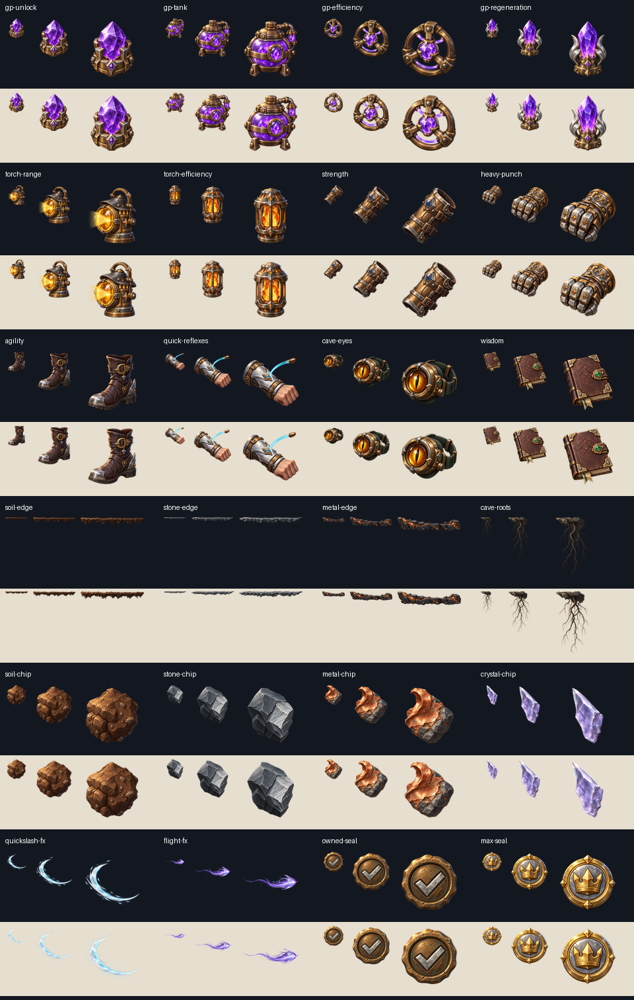
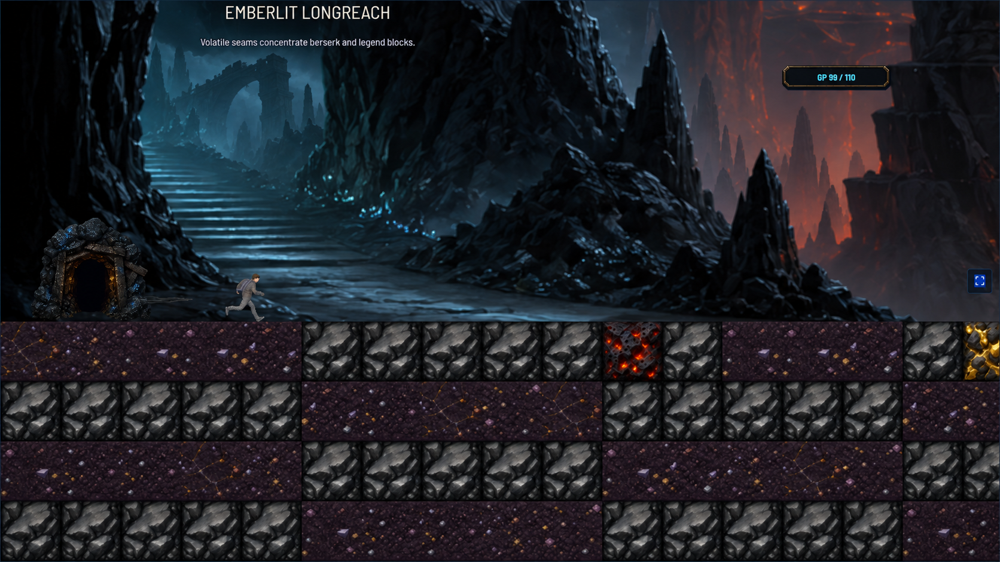
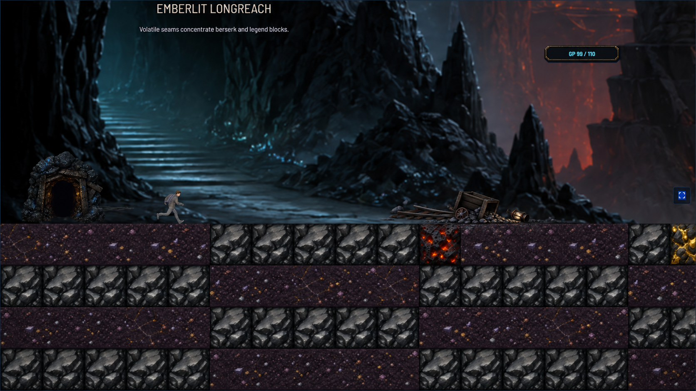

Runtime artwork at 34, 64 and 96 pixels

The runtime artwork below covers the selected September 9 changes. The two cave compositions are review-only concepts based on an older screenshot; neither is wired into the game.

A broken arch and distant stone needles add depth without competing with the foreground.

A single small cart, broken rails and unlit lantern suggest previous explorers while preserving space around the player.
